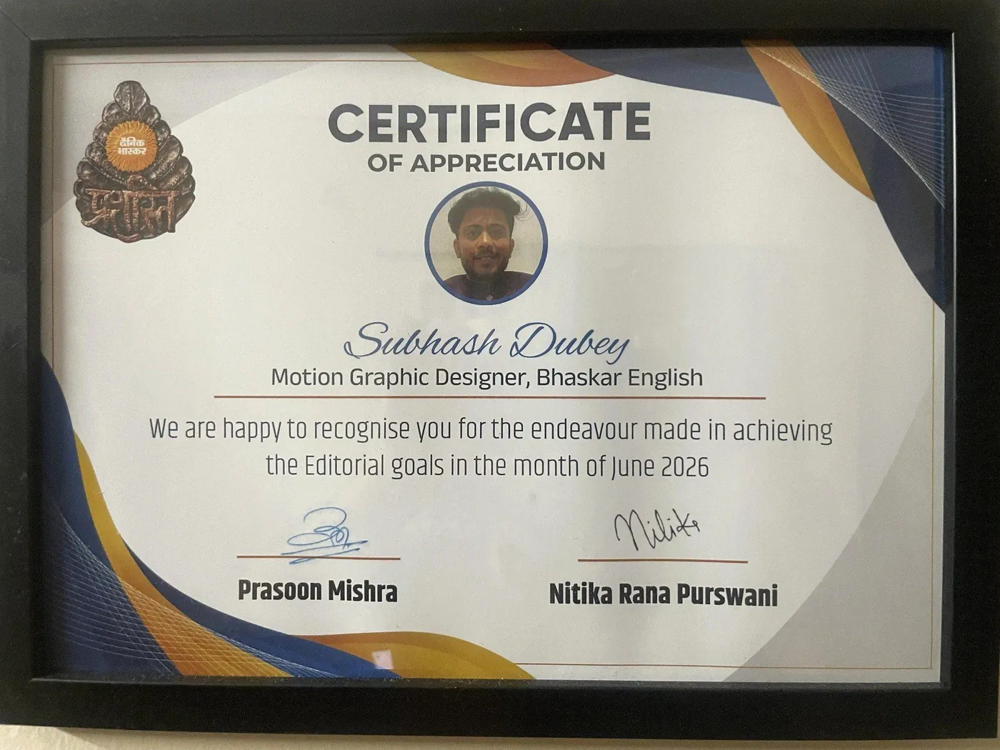
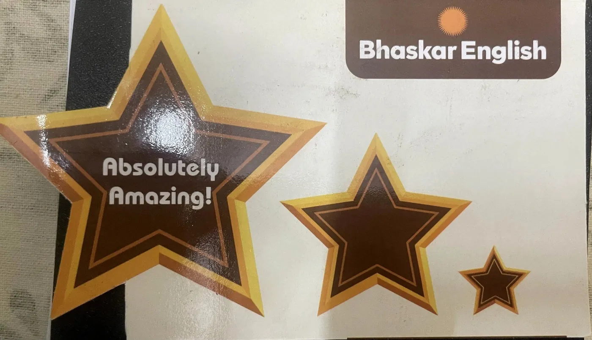
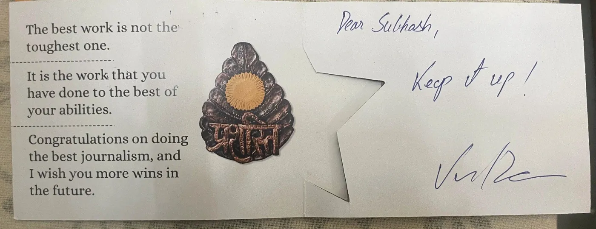
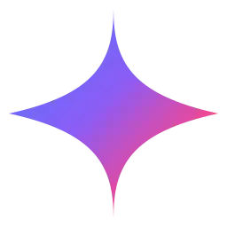

AI Motion Graphics
AI-generated elements, backgrounds and textures — scripted with Claude AI — animated into logo reveals, explainers, titles and transitions.
- Claude AI
- Runway
- Firefly
- After Effects
✦ AI Motion Graphics✦ AI Video✦ Video Editing 6+ yrs · Bhopal
Senior Motion Graphics Designer
I turn ideas, stories and information into visuals that move — through AI motion graphics, motion design, video editing and AI video.
01 Selected work · Showreel
All videos from my two YouTube channels. Tap any project to play it in the player — no need to leave the page.
▶ YouTube
My showreel channel for motion & VFX work, and my own channel for AI films, explainers and stories.
@SDMotionStudio-p8s · 3 videos
Motion graphics, video editing, title design, 3D/VFX and AI-powered showreel work.
▶ Watch showreel channel ↗@subhashdubey-01 · 7 videos
Stories that connect us all — AI short films, news & tech explainers, history and festive shorts.
▶ Visit my channel ↗02 About
I'm Subhash — a Senior Motion Graphics Designer specialising in AI Motion Graphics, video editing, graphic design and AI video, with 6+ years of turning complex ideas into clear, engaging, visually powerful content.
Today I lead a 5-member creative team at Dainik Bhaskar English — show openers, news explainers, data visualisations, lower thirds, templates, thumbnails and social creatives — and received the “Prashasti” award for editorial contribution. Before that I produced educational and current-affairs animation at StudyIQ IAS, and edited for brands and creators as a freelancer.
My toolkit blends Adobe Creative Suite, 2D/3D, After Effects expressions & scripts, editorial storytelling and AI-assisted production — always with the story first.
03 Services
End-to-end — from concept and design to animation, edit, sound and delivery.
AI-generated elements, backgrounds and textures — scripted with Claude AI — animated into logo reveals, explainers, titles and transitions.
Text-to-video and image-to-video shots, AI short films, AI b-roll and cinematic sequences — from prompt to finished edit.
News, YouTube, reels, explainers and promos — story, pacing, colour, sound sync and finishing.
2D/3D motion, kinetic typography, logo animation, lower thirds, transitions and data visualisation.
Channel branding, show openers, title sequences, map animation and template systems for news teams.
Editorial graphics, thumbnails, posters and social creatives built for audience and platform.
With AI, I build .mogrt templates for After Effects & Premiere Pro — lower thirds, titles, branding packs and data or election graphics. I use AI-written JSX scripts in After Effects and edit them myself, create HTML, PDF, MP4 and image files with Claude, and build Excel sheets such as team attendance — cutting time on repetitive work.
04 Human × AI
I use AI to explore faster and produce more — while the concept, taste and storytelling stay human.
AI-generated elements, backgrounds and textures — scripted and planned with Claude AI — animated into logo reveals, explainers, titles and transitions.
Text-to-video and image-to-video shots, AI b-roll, scene extension and cinematic sequences cut into finished edits.
AI images for thumbnails, posters, social creatives and key visuals — refined and composed in Photoshop.
+ AI + Automation
I don't just use After Effects and Premiere Pro — I extend them. With Claude and ChatGPT I create templates, scripts and files that take repetitive work off my team's plate.
Result: repetitive tasks take far less time, so more of the day goes into creative work.
05 Experience
Visual storytelling · Creative thinking · Simplifying complex information · Composition · Typography · Pacing · Visual hierarchy · Tight deadlines · High-volume production · Concept-to-delivery ownership · Editorial collaboration · AI + traditional design workflows · Digital-first content
06 Recognition
Formal appreciation, performance awards and personal notes celebrating contribution, quality and storytelling.

Recognised as Motion Graphic Designer, Bhaskar English, for efforts and contribution towards achieving editorial goals.

A recognition highlight from Bhaskar English celebrating creative and editorial contribution.

A personal note recognising strong journalism, effort and continued creative contribution.
07 Software & AI
Industry software for motion, edit and design — plus a growing AI toolkit for ideation, images and video.

08 Contact
Open for AI motion graphics, AI video, video editing and motion design projects — and full-time roles.